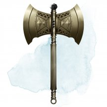
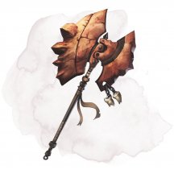
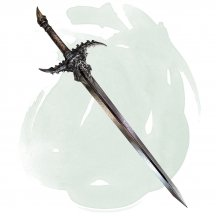
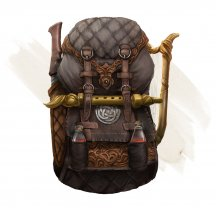
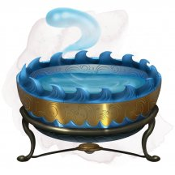
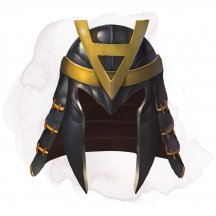
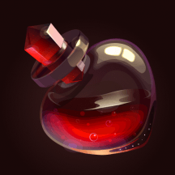

- Чудесный предмет, редкий (требуется настройка)
- Рекомендованная стоимость: 501-5 000 зм
Эта хрустальная сфера размером чуть меньше дюйма светится экстрапланарной энергией.
В рамках настройки на этот предмет вы прижимаете хрустальную сферу к рукоятке немагического рукопашного оружия по вашему выбору, магически прикрепляя сферу к оружию. Оружие становится магическим с бонусом +1 к броскам атаки и урона. Владея этим оружием, вы получаете следующие преимущества:
Якорь измерений. Вы совершаете с преимуществом спасброски против заклинаний и эффектов, которые могут переместить вас в межпространство, демиплан или другой план существования против вашей воли.
Изолирующий удар. Когда вы попадаете по существу этим оружием, вы можете заставить его совершить спасбросок Харизмы со Сл 16. В случае провала существо изгоняется в безобидный демиплан до конца своего следующего хода. Когда изгнанное существо возвращается, оно снова появляется в том месте, которое оно покинуло, или в ближайшем незанятом месте, если это место занято. Как только это свойство будет использовано, его нельзя будет использовать снова до следующего рассвета.
Когда вы прекращаете настройку на сферу, сфера безвредно отделяется от оружия, и оружие снова становится немагическим предметом снаряжения.
Магические предметы
- Оружие (булава), редкое
- Рекомендованная стоимость: 501-5 000 зм
Это оружие-магическая булава +2, именуемая «Счётчик костей». Всякий раз, когда этим оружием уничтожается нежить, в кармане владельца появляется одна серебряная монета.
- Чудесный предмет, редкий
- Рекомендованная стоимость: 501-5 000 зм
Эта глиняная табличка восьми дюймов в длину, четыре дюйма в ширину и полдюйма в толщину. На нем начертана последовательность символов для постоянного круга телепортации.
Существо, которое изучает данную последовательность в течение 10 минут, может совершить проверку Интеллекта (Магия) Сл 21, узнавая назначение круга в случае успеха.
Действием вы можете разломить табличку пополам, превращая её в пыль. Если табличка разламывается, находясь на том же плане существования, что и круг телепортации, последовательность символов которого была выгравирована на нём, на земле в выбранном вами свободном пространстве, в пределах 30 футов от вас появляется круг телепортации диаметром 10 футов, светящийся синим светом. Этот круг телепортации обладает характеристиками круга, созданного с помощью заклинания круг телепортации [teleportation circle], за исключением того, что он соединяется с кругом телепортации, последовательность символов которого отображается на табличке.
Круг телепортации, созданный табличкой, исчезает в конце вашего следующего хода.
- Доспех (щит), редкий (требуется настройка)
- Рекомендованная стоимость: 501-5 000 зм
Держа этот железный башенный щит, вы получаете бонус +1 к КД. Этот бонус является дополнением к обычному бонусу щита к КД.
Кроме того, щит имеет 3 заряда, и он восстанавливает 1к3 израсходованных заряда ежедневно на рассвете. Если вы держите щит и толкаете существо в пределах вашей досягаемости по крайней мере на 5 футов, то вы можете потратить 1 заряд, чтобы оттолкнуть это существо ещё на 10 футов, сбить его с ног или и то, и другое вместе.
- Чудесный предмет (татуировка), редкий (требуется настройка)
- Рекомендованная стоимость: 501-5 000 зм
Нанесённая специальной иглой, эта магическая татуировка имеет абстрактный внешний вид в тёмных тонах.
Настройка на татуировку. Чтобы настроиться на этот предмет, вам необходимо на протяжении всего времени настройки нажимать иглой на кожу там, где вы хотите, чтобы татуировка находилась. Когда настройка завершается, игла превращается в чернила, которые принимают очертания нарисованного вами узора на коже.
Если ваша настройка на татуировку заканчивается, она исчезает, а игла снова появляется в вашем пространстве.
Теневая сущность. Вы получаете тёмное зрение в пределах 60 футов и совершаете проверки Ловкости (Скрытность) с преимуществом.
Теневая защита. Когда вы получаете урон, вы можете реакцией стать бесплотным на мгновение, уменьшив вдвое урон, который вы получаете. Эта реакция не может быть совершена вновь до следующего заката.

- Оружие (любой топор), редкое (требуется настройка)
- Рекомендованная стоимость: 501-5 000 зм
Вы получаете бонус +1 к броскам атаки и урона, совершённым этим магическим оружием. Кроме того, пока вы настроены на это оружие, максимум ваших хитов увеличивается на 1 за каждый полученный уровень.
Проклятье. Этот топор проклят, и это проклятье простирается и на того, кто настраивается на него. Пока вы остаётесь прокляты, вы не хотите расставаться с топором, и всегда держите его под рукой. Вы также совершаете с помехой броски атаки другим оружием, кроме случаев, когда в пределах 60 футов нет врагов, которых вы можете видеть или слышать.
Каждый раз, когда враждебное существо причиняет вам урон, а топор при этом находится при вас, вы должны преуспеть в спасброске Мудрости Сл 15, иначе станете берсерком. Будучи берсерком, вы обязаны своим действием в каждом раунде атаковать этим топором ближайшее существо. Если вы можете совершать дополнительные атаки частью действия Атака, вы совершаете эти атаки, переходя к следующему ближайшему существу, после того как расправитесь с текущей целью. Если у вас есть несколько возможных целей, вы атакуете того, кого выберете случайным образом. Вы остаётесь берсерком, пока не получится так, что в начале вашего хода в пределах 60 футов от вас не останется существ, которых вы можете видеть или слышать.
- Оружие (Секира), редкое
- Рекомендованная стоимость: 501-5 000 зм
Вы получаете бонус +1 к броскам атаки и урона этим магическим оружием.
Когда вы используете этот топор для атаки по растению (обычное растение или существо с типом растение) или деревянному предмету, который никто не носит и не несёт, атака дополнительно наносит 2к6 рубящего урона при попадании.

- Оружие (любой меч, любой топор), редкое
- Рекомендованная стоимость: 501-5 000 зм
Вы получаете бонус +1 к броскам атаки и урона, совершённым этим магическим оружием.
Если вы попадаете им по великану, великан получает дополнительный урон 2к6, соответствующий виду оружия, и должен преуспеть в спасброске Силы Сл 15, иначе он будет сбит с ног. Для этого оружия «великан» означает любое существо с видом «великан», включая эттинов и троллей.

- Оружие (любой меч), редкое
- Рекомендованная стоимость: 501-5 000 зм
Вы получаете бонус +1 к броскам атаки и урона, совершённым этим магическим оружием.
Если вы попадаете этим оружием по дракону, он получит дополнительный урон 3к6, соответствующий виду оружия. Для этого оружия «дракон» означает любое существо с видом «дракон», включая виверн и дракочерепах.
- Оружие (любое), редкое (требуется настройка)
- Рекомендованная стоимость: 501-5 000 зм
Вы получаете бонус +1 к броскам атаки и урона, совершённым этим магическим оружием.
Если вы попадаете этим магическим оружием по нежити, то она дополнительно получает 1к8 урона оружия, и совершает с помехой спасброски против эффектов, которые изгоняют нежить до начала вашего следующего хода.

- Чудесный предмет, редкий
- Рекомендованная стоимость: 501-5 000 зм
У этого рюкзака есть центральный карман и два боковых кармана, и все они являются межпространственными местами. В каждом боковом кармане помещается по 20 фунтов материи, не превышающей в объёме 2 кубических фута. В центральном кармане помещается до 8 кубических футов материи, весящей не больше 80 фунтов. Этот рюкзак всегда весит 5 фунтов, что бы в нём ни хранилось.
Помещение предмета в рюкзак использует обычные правила взаимодействия с предметами. Достаются предметы из рюкзака действием. Если вы достаёте из рюкзака конкретную вещь, она магическим образом всегда оказывается на самом верху.
У рюкзака есть несколько ограничений. Если он будет переполнен или если острый предмет проткнёт или разорвёт его, рюкзак разрывается и уничтожается. Если рюкзак уничтожается, всё его содержимое навсегда теряется, но артефакты появляются в новых местах. Если рюкзак вывернуть наизнанку, его содержимое выпадет наружу, но рюкзак придётся вывернуть обратно, чтобы его снова можно было использовать. Если в рюкзак поместить дышащее существо, оно может выжить 10 минут, после чего начнёт задыхаться.
Помещение рюкзака в межпространство, созданное сумкой хранения, переносной дырой или подобным предметом, мгновенно уничтожает оба предмета и открывает врата в Астральный План. Врата появляются в месте, где один предмет пытались поместить в другой. Все существа в пределах 10 футов от врат затягиваются внутрь и помещаются в случайным образом определённое место на Астральном Плане. После этого врата закрываются. Врата односторонние, и повторно не открываются.
- Чудесный предмет, редкий
- Рекомендованная стоимость: 501-5 000 зм
Эта тонкая кожаная уздечка дергается в руке, когда её держат, как будто она жаждет дотянуться до зверя поблизости. Когда вы держите один конец уздечки, вы можете действием произнести её командное слово, заставив другой конец наброситься на зверя, которого вы видите в пределах 20 футов от себя. Цель должна преуспеть в спасброске Харизмы Сл 17, иначе уздечка обвяжется вокруг её шеи, а затем она попадет под ваше управление, как если бы она подверглась заклинанию подчинение зверя [dominate beast]. Как только цель поражена, вам не нужно держать другой конец уздечки, чтобы управлять ею. При успешном спасброске цель становится невосприимчивой к силе уздечки до следующего рассвета.
(Существо, находящееся под контролем уздечки, может быть освобождено существом, связавшим его.) Бонусным действием, контролирующий цель может освободить её от уздечки. Существо, контролируемое уздечкой, может совершать проверку Харизмы Сл 17 каждый день на рассвете. При успехе на существо больше не действует уздечка.
- Чудесный предмет, редкий (требуется настройка)
- Рекомендованная стоимость: 501-5 000 зм
Этот чёрный кожаный фартук постоянно покрыт кровью, даже после того, как его почистят. Надевая фартук, вы получаете следующие преимущества:
- Один раз за ход, когда вы совершаете бросок урона для атаки рукопашным оружием, вы можете перебросить кость урона оружия. Когда вы это делаете, вы должны использовать второй результат.
- Ваши атаки оружием, наносящим рубящий урон, совершают критическое попадание при выпадении «19» или «20» на кости атаки.
- Чудесный предмет, редкий (требуется настройка волшебником)
- Рекомендованная стоимость: 501-5 000 зм
Этот том с обложкой из кожи и костяной фурнитурой холоден на ощупь и едва заметно шепчет. Найденная книга содержит следующие заклинания, которые являются для вас заклинаниями волшебника, пока вы настроены на неё: восставший труп [animate dead], круг смерти [circle of death], перст смерти [finger of death], призыв духа нежити [summon undead], прикосновение вампира [vampiric touch], псевдожизнь [false life], разговор с мёртвыми [speak with dead]. Эта книга функционирует для вас как книга заклинаний.
Когда вы держите книгу, вы можете использовать её в качестве заклинательной фокусировки для ваших заклинаний волшебника. Книга имеет 3 заряда и ежедневно восстанавливает 1к3 заряда на рассвете. Вы можете использовать заряды следующими способами, пока держите книгу:
- Если вы потратите 1 минуту на изучение книги, вы можете израсходовать 1 заряд и заменить одно из своих подготовленных заклинаний волшебника на другое заклинание из книги. Новое заклинание должно принадлежать школе Некромантии.
- Действием вы можете потратить 1 заряд, чтобы стать похожим на нежить на 10 минут. В течение этого времени вы имеете внешний вид мертвеца, и нежить безразлична к вам, пока вы не нанесёте ей урон. Вы также выглядите нежитью для любого внешнего осмотра и заклинаний, определяющих состояние цели. Эффект заканчивается, если вы наносите урон или заставляете существо совершить спасбросок.
- Оружие (кнут), редкое
- Рекомендованная стоимость: 501-5 000 зм
Вы получаете бонус +1 к броскам атаки и урона, совершённым этим магическим оружием.
Когда вы попадаете этим кнутом по существу или объекту Большого размера или меньше, вы можете притянуть это существо или объект на 5 футов к себе вместо нанесения урона.
- Оружие (любой меч), редкое (требуется настройка)
- Рекомендованная стоимость: 501-5 000 зм
Клинок этого магического меча сделан из рога или хребта хрустального дракона. Когда вы попадаете по существу атакой, совершённой этим мечом, цель получает 1к8 дополнительного урона излучением.
Меч имеет 3 заряда и восстанавливает 1к3 зарядов на каждом рассвете. Когда вы попадаете по существу атакой, совершённой этим мечом, вы можете потратить 1 заряд, чтобы восстановить себе хиты в количестве, равном дополнительному урону излучением, нанесённому этим мечом в этой атаке.
Пока вы держите меч, вы можете бонусным действием заставить его излучать яркий свет в радиусе 30 футов и тусклый свет ещё на 30 футов, излучать тусклый свет в радиусе 10 футов или погасить свет.

- Чудесный предмет, редкий
- Рекомендованная стоимость: 501-5 000 зм
Если эта чаша наполнена водой, вы можете действием произнести командное слово и призвать водяного элементаля [water elemental], как если бы наложили заклинание призыв элементаля [conjure elemental]. Чашу нельзя использовать повторно, пока не наступит следующий рассвет. Чаша диаметром примерно 1 фут, а в высоту она в два раза меньше. Она весит 3 фунта и вмещает 3 галлона.
- Чудесный предмет, редкий (требуется настройка)
- Рекомендованная стоимость: 501-5 000 зм
Этот гранитный шар размерами примерно с кулак взрослого человека. Руна Стейн (камень) отблёскивает алмазными прожилками на его поверхности. Шар обладает следующими свойствами, которые функционируют, пока он при вас.
Несломимая оборона. Действием вы можете перенести магию шара, чтобы выстоять перед напором.
В течение следующей минуты или до того момента пока вы не подвигаетесь, вы получаете преимущество на все проверки и спасброски против эффектов, вынуждающих вас двигаться. Вдобавок, любой противник, который входит в область в 10 футах от вас должен преуспеть в спасброске Силы Сл 12 или более не способен передвигаться в этом ходу.
Каменная душа. Вас нельзя обратить в камень.
Шаг сквозь землю. Вы можете бонусным действием наложить заклинание слияние с камнем [meld into stone]. Как только вы воспользуетесь этим свойством, вы не можете им более воспользоваться пока не совершите короткий или длительный отдых.
Дар камня. Вы можете перенести магию шара на не магический предмет щит или пару обуви нарисовав на нём руну Стейн пальцем. Перенос требует 8 часов работы, и чтобы шар и предмет находились в 5 футах друг от друга. В конце этого ритуала, шар уничтожается, а на предмете появляется серебристая руна и он получает следующие свойства:
- Щит. Щит теперь становится редким магическим предметом, который требует настройки. Пока вы используете этот щит, вы получаете сопротивление любому урону, наносимому дальнобойными атаками оружием.
- Обувь. Пара обуви теперь необычный магический предмет, требующий настройки. Пока вы носите её, вы получаете преимущество на проверки Скрытности и можете реакцией избежать того, чтобы быть сбитым с ног.
- Доспех (любой тяжёлый), редкий (требуется настройка)
- Рекомендованная стоимость: 501-5 000 зм
Этот доспех похож на котел с пузырящимся чёрным ихором. Когда вы настраиваетесь на него, котел исчезает, а ихор прилипает к вашей коже. Доспех можно носить под одеждой, он не сковывает ваши движения, а также не мешает вашему телу. После надевания доспеха его будет невозможно снять, пока вы добровольно не захотите это сделать или не умрете. В таком случае котел вновь появится, а ихор перетечет в него.
Пока вы носите этот доспех, вы получаете сопротивление урону ядом. Также он не накладывает помеху на проверки Ловкости (Скрытность).
- Чудесный предмет, редкий (требуется настройка)
- Рекомендованная стоимость: 501-5 000 зм
Нося этот шлем, вы знаете, есть ли в 30 футах от вас Небожитель или Исчадие, а также его местоположение, при условии, что оно не находится за полным укрытием.
Каждый раз, когда вы заканчиваете продолжительный отдых и надеваете шлем, вы можете помолиться одному из богов, перечисленных в таблице «Шлем богов», и сохранить указанное заклинание в шлеме, заменяя любое заклинание, которое уже хранится в нем. Сл спасброска для этих заклинаний 13.
У шлема есть 3 заряда. Чтобы наложить заклинание с помощью шлема, вы должны израсходовать 1 заряд. Шлем восстанавливает 1к3 заряда ежедневно на рассвете.
Шлем богов
Бог Заклинание Атрей защита от зла и добра [protection from evil and good] Гелиод направленный снаряд [guiding bolt] Ирой героизм [heroism] Караметра чудо-ягоды [goodberry] Керан громовая кара [thunderous smite] Клотида опутывание [entangle] Круфикс диссонирующий шёпот [dissonant whispers] Могий адское возмездие [hellish rebuke] Нилея огонь фей [faerie fire] Пирфор палящая кара [searing smite] Тасса опознание [identify] Фарика малое восстановление [lesser restoration] Фенакс очарование личности [charm person] Эреб нанесение ран [inflict wounds] Эфара убежище [sanctuary]

- Чудесный предмет, редкий (требуется настройка)
- Рекомендованная стоимость: 501-5 000 зм
У этого шлема есть 3 заряда. Если вы его носите, вы можете действием потратить 1 заряд, чтобы наложить им заклинание телепортация [teleport]. Шлем ежедневно восстанавливает 1к3 заряда на рассвете.
- Доспех (щит), редкий
- Рекомендованная стоимость: 501-5 000 зм
Свежеватель разума [mind flayer], сведущий в создании магических предметов, создает щит дальнего взора, взяв глаз разумного гуманоида и магически вставив его во внешнюю поверхность немагического щита. Щит становится магическим предметом после вставления глаза, после чего свежеватель разума может отдать щит рабу или повесить его на стену в логове. Пока щит находится в одном плане существования с его создателем свежеватель разума может видеть глазом на щите, который обладает тёмным зрением на 60 футов. Смотря через магический глаз, свежеватель разума может использовать свое действие Взрыв разума [Mind Blast] так, как будто бы он стоял за щитом.
Если щит дальнего взора уничтожен, то свежеватель разума, который его создал, слепнет на 2к12 часов.
- Доспех (щит), редкий (требуется настройка)
- Рекомендованная стоимость: 501-5 000 зм
Солдаты Легиона Бороса считают честью носить этот щит, даже зная, что это может быть последняя честь, которую они получают. На лицевой части щита изображено скорбящее человеческое лицо.
Вы получаете бонус +1 к КД за каждых двух союзников в пределах 5 футов от вас (максимум +3), пока вы носите этот щит. Этот бонус является дополнением к обычному бонусу щита к КД.
Когда существо, которое вы видите в пределах 5 футов от вас, получает урон, вы можете использовать свою Реакцию, чтобы получить этот урон вместо него. Когда вы это делаете, тип урона меняется на силовое поле.

- Доспех (щит), редкий (требуется настройка)
- Рекомендованная стоимость: 501-5 000 зм
Вы получаете сопротивление урону от дальнобойных атак оружием, пока держите этот щит.
Проклятье.Этот щит проклят. Если вы настраиваетесь на него, вы становитесь проклятым, пока не станете целью заклинания снятие проклятья [remove curse] или другой подобной магии. Простое снятие щита не оканчивает проклятье на вас. Каждый раз, когда по цели, находящейся в пределах 10 футов от вас, совершается дальнобойная атака оружием, проклятье заставляет стать целью вас.

- Зелье, редкое
- Рекомендованная стоимость: 251-2 500 зм
Если вы выпьете это зелье, оно вылечит вас от всех болезней, а также устраняет состояния «оглохший», «ослеплён», «отравлен» и «парализован». Это прозрачная красная жидкость с пузырьками света в ней.